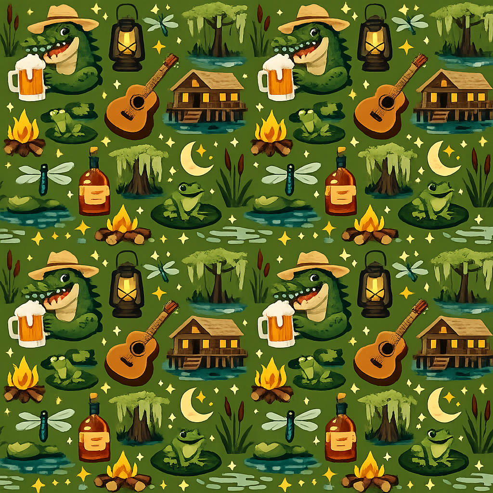

Home
Welcome to my ITIS 3135 home page!
Use the navigation links above to explore the different sections of the site, including my introduction and contract for the course.

Welcome to my ITIS 3135 home page!
Use the navigation links above to explore the different sections of the site, including my introduction and contract for the course.
